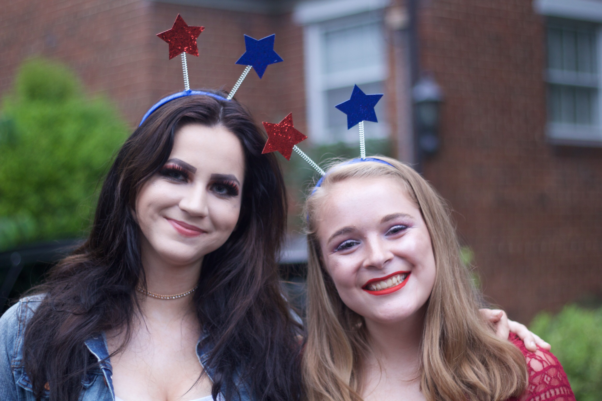

Molly Brigham

Thoughts?
What is my perfect crime? I break into Tiffany's at midnight. Do I go for the vault? No, I go for the chandelier. It's priceless. As I'm taking it down, a woman catches me. She tells me to stop. It's her father's business. She's Tiffany. I say no. We make love all night. In the morning, the cops come and I escape in one of their uniforms. I tell her to meet me in Mexico, but I go to Canada. I don't trust her. Besides, I like the cold. Thirty years later, I get a postcard. I have a son and he's the chief of police. This is where the story gets interesting. I tell Tiffany to meet me in Paris by the Trocadero. She's been waiting for me all these years. She's never taken another lover. I don't care. I don't show up. I go to Berlin. That's where I stashed the chandelier.
}


While Huxley’s eugenics expertise allows some scholars to question his motives and messages in writing Brave New World, John the Savage’s downward spiral culminating in his death reveals the extreme totalitarianism of this fictional society that the brainwashed civilians can’t see: humans have a tendency to take science too far, and bringing eugenics to this extreme creates a society full of practically brainless parts to the machine that is civilization. The civilians shrewdly shorten John the Savage’s name to just “Savage” because they do not understand the concept of diversity, and he soon realizes that his only alternative to this type of society is death. As the controller of this precinct of society explains the absence of God, John cannot even escape into the comfort of spirituality, as civilians heavily ridicule his pursuit of spiritual enlightenment and connection with God. The combination of the lack of individualism and the lack of opportunity for transcendence keeps John from achieving peace, and expresses Huxley’s prediction that society is dangerously capable of reaching this anti-individualistic extreme through the expansion of science. Instead, Huxley’s text suggests that a balance between traditionalism, new science, and modernism is necessary to maintain a stable society that is also inclusive toward truth and beauty.